This is what we’re going to learn today:
Scopes, why scopes useful, how to implement them in code with symbol tables
Nested scopes, how chained scoped symbol tables are used to implement nested scopes
How to parse procedure declarations with formal parameters and how to represent a procedure symbol in code.
How to extend the semantic analyzer to do semantic checks in the presence of nested scopes
Learn more about name resolution and how the semantic analyzer resolves names to their declarations when a program has nested scopes.
How to build a scope tree.
How to write the very own source-to-source compiler
Scopes and scoped symbol tables
A scope is a textual region of a program where a name can be used.
program Main;
var x, y : integer;
begin
x := x + y;
end.In Pascal, the PROGRAM keyword (case insensitive) introduces a new scope which is commonly called a global scope, so the program above has one global scope and the declared variables x and y are visible and accessible in the whole program.
When we talk about the scope of a variable, we actually talk about the scope of its declaration.
Pascal programs are said to be lexically scoped (or statically scoped) because you can look at the source code, and without even executing the program, determine purely based on the textual rules which names(references) resolve or refer to which declarations. In Pascal, lexcial keywords like program and end demarcate the textual boundaries of a scope:
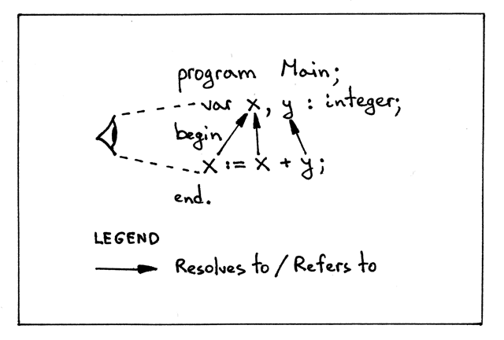
Why are scopes useful?
Every scope creates an isolated namespace, which means that variables declared in a scope cannot be accessed from outside of it.
Re-use the same name in different scopes and know exactly, just by looking at the program source code, what declaration the name refers to at every point in the program.
In a nested scope you can re-declare a variable with the same name as in the outer scope, thus effectively hiding the outer declaration, which gives you control over access to different variables from the outer scope.
In addition to the global scope, Pascal supports nested procedures, and every procedure declaration introduces a new scope, which means that Pascal supports nested scopes.
When we talk about nested scopes, it’s convenient to talk about scope levels to show their nesting relationships. It’s also convenient to refer to scopes by name. We’ll use both scope levels and scope names when we start our discussion of nested scopes.
Let’s take a look at the following sample program and subscript every name in the program to make it clear:
- At what level each variable (symbol) is declared
- To which declaration and at what level a variable name refers to:
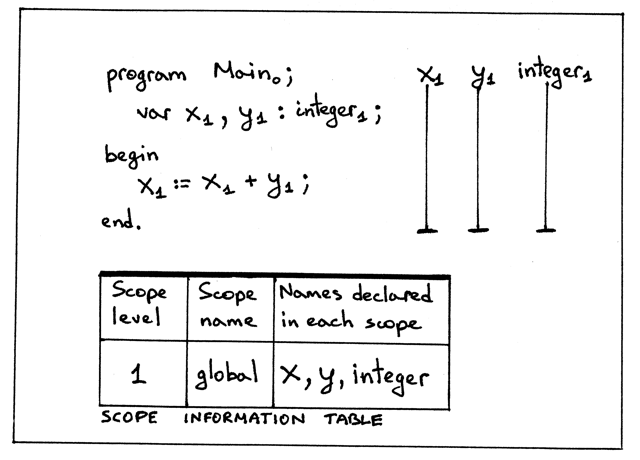
From the picture above we can see several things:
- We have a single scope, the global scope, introduced by the PROGRAM keyword
- Global scope is at level 1
- Variables (symbols) x and y are declared at level 1 (the global scope).
- integer built-in type is also declared at level 1
- The program name Main has a subscript 0. Why is the program’s name at level zero, you might wonder? This is to make it clear that the program’s name is not in the global scope and it’s in some other outer scope, that has level zero.
- The scope of the variables x and y is the whole program, as shown by the vertical lines
- The scope information table shows for every level in the program the corresponding scope level, scope name, and names declared in the scope. The purpose of the table is to summarize and visually show different information about scopes in a program.
To represent a scope in code, we’ll need a scoped symbol table, which is basically a symbol table with a few modifications.
From now on, we’ll use the word scope both to mean the concept of a scope as well as to refer to the scoped symbol table which is an implementation of the scope in code.
Even though in our code a scope is represented by an instance of the ScopedSymbolTable class, we’ll use the variable named scope throughout the code for convenience. So when you see a variable scope in the code of the interpreter, you should know that it actually refers to a scoped symbol table.
Now, let’s enhance our SymbolTable class by renaming it to ScopedSymbolTable class, adding two new fields scope_level_ and _scope_name, and updating the scoped symbol table’s constructor. And at the same time, let’s update the __str__ method to print additional information, namely the scope_level_ and _scope_name.
class ScopedSymbolTable(object):
def __init__(self, scope_name, scope_level):
self._symbols = OrderedDict()
self.scope_name = scope_name
self.scope_level = scope_level
self._init_builtins()
def _init_builtins(self):
self.insert(BuiltinTypesSymbol('INTEGER'))
self.insert(BuiltinTypesSymbol('REAL'))
def __str__(self):
h1 = 'SCOPE (SCOPED SYMBOL TABLE)'
lines = ['\n', h1, '=' * len(h1)]
for header_name, header_value in (
('Scope name' , self.scope_name),
('Scope level', self.scope_level)
):
lines.append('%-15s: %s' % (header_name, header_value))
h2 = 'Scope (Scoped symbol table) contents'
lines.extend([h2, '-' *len(h2)])
lines.extend(
('%7s: %r ' % (key , value)) for key ,value in self._symbols.items()
)
lines.append('\n')
s = '\n'.join(lines)
return s
__repr__ = __str__
def insert(self, symbol):
print('Insert: %s' % symbol.name)
self._symbols[symbol.name] = symbol
def lookup(self, name):
print('Lookup: %s' % name)
symbol = self._symbols.get(name)
# 'symbol' is either an instance of the Symbol class or None
return symbolWe need to update the semantic analyzer to use the variable scope instead of symtab, and remove the semantic check that was checking source programs for duplicate identifiers from the _visit_VarDecl_ method to reduce the noise in the program output.
class SemanticAnalyzer(NodeVisitor):
def __init__(self):
self.scope = ScopedSymbolTable(scope_name='global', scope_level=1)
...Procedure declarations with formal parameters
A sample code that contains a procedure declaration:
program Main;
var x, y: real;
procedure Alpha(a : integer);
var y : integer;
begin
x := a + x + y;
end;
begin { Main }
end. { Main }You can see the procedure here comes with a parameter. Let’s tackle this first by making a quick detour and learning how to handle formal procedure parameters.
ASIDE Formal parameters are parameters that show up in the declaration of a procedure. Arguments (aka actual parameters) are different variables and expressions passed to a procedure in a particular procedure call.
We have many changes to make to support procedure declarations with parameters:
Add the Param AST node
class Param(AST): def __init__(self, var_node, type_node): self.var_node = var_node self.type_node = type_nodeUpdate the ProcedureDecl node’s constructor to take an additional argument: params
class ProcedureDecl(AST): def __init__(self, proc_name, params, block_node): self.proc_name = proc_name self.params = params # a list of Param nodes self.block_node = block_nodeUpdate the declarations rule to reflect changes in the procedure declaration sub-rule
def declarations(self): """declarations : (VAR (variable_declaration SEMI)+)* | (PROCEDURE ID (LPAREN formal_parameter_list RPAREN)? SEMI block SEMI)* | empty """The formal_parameter_list rule and method
def formal_parameter_list(self): """ formal_parameter_list : formal_parameters | formal_parameters SEMI formal_parameter_list """Add the _formal_parameters_ rule and method
def formal_parameters(self): """ formal_parameters : ID (COMMA ID)* COLON type_spec """ param_nodes = []With these addition of the above methods and rules our parser will be able to parse procedure declarations like the following sample code:
procedure Foo;
procedure Foo(a : INTEGER);
procedure Foo(a, b : INTEGER);
procedure Foo(a, b : INTEGER; c : REAL);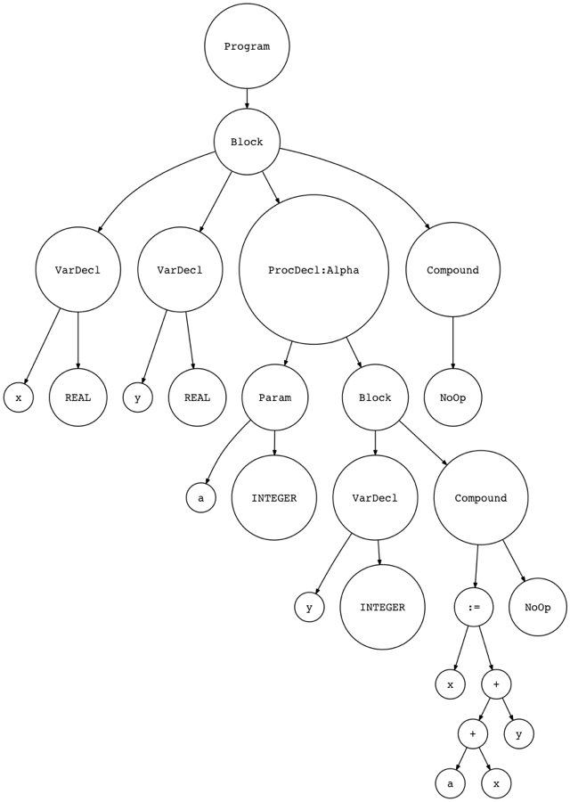 |
|---|
| AST |
Procedure Symbols
As with variable declarations, and built-in type declarations, there is a separate category of symbols for procedures. Let’s create a separate symbol class for procedure symbols:
class ProcedureSymbol(Symbol):
def __init__(self, name, params=None):
super().__init__(name)
# a list of formal parameters
self.params = params if params is not None else []
def __str__(self):
return '<{class_name}(name={name}, parameters={params})>'.format(
class_name=self.__class__.__name__,
name=self.name,
params=self.params,
)
__repr__ = __str__Procedure symbols have a name (the procedure’s name), their category is procedure (encoded in the class name), and the type is None because in Pascal procedures don’t return anything.
Procedure symbols also carry additional information about procedure declarations, namely they contain informaiton about the procedure’s formal parameters.
With the addition of procedure symbols, our new symbol hierarchy looks like this:
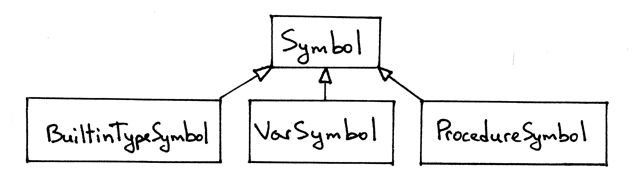
Nested Scopes
Now time to get back to the program and the discussion of nested scopes:
program Main;
var x, y: real;
procedure Alpha(a : integer);
var y : integer;
begin
x := a + x + y;
end;
begin { Main }
end. { Main }By declaring a new procedure, we introduce a new scope, and this scope is nested within the global scope introduced by the PROGRAM statement, so this is a case where we have nested scopes in a Pascal program.
The scope of a procedure is the whole body of the procedure. The beginning of the procedure scope is marked by the PROCEDURE keyword and the end is marked by the END keyword and a semicolon.
Let’s subscript names in the program and show some additional information:
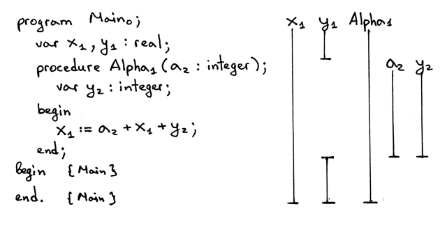
Some observation from the picture above:
Tow scope level: level 1 and level 2
The nesting relationships diagram visually shows that the scope Alpha is nested within the global scope, hence there are two levels: the global scope at level 1, and the Alpha scope at level 2.
The scope level of the procedure declaration Alpha is one less than the level of the variables declared inside the procedure Alpha.
The variable declaration of y inside Alpha hides the declaration of y in the global scope. You can see the hole in the vertical bar for y1 and you can see that the scope of the y2 variable declaration is the Alpha procedure’s whole body.
The scope information table shows scope levels, scope names for those levels, and respective names declared in those scopes.
In the picture, we omitted showing the scope of the integer and real types (except in the scope information table) because they are always declared at scope level 1, the global scope.
Now on discussing implementation details.
First, let’s focus on variable and procedure declarations. Then, we’ll discuss variable references and how name resolution works in teh presence of nested scopes.
For our discussion, we’ll use a stripped down version of the program. The following version does not have variable references, it only has variable and procedure declarations:
program Main;
var x, y: real;
procedure Alpha(a : integer);
var y : integer;
begin
end;
begin { Main }
end. { Main }From the code, we have two scopes: the global scope and the scope introduced by the procedure Alpha. Following our approach we should now have two scoped symbol tables: one for the global scope and one for the Alpha scope.
We’ll extend the semantic analyzer to create a separate scoped symbol table for every scope instead of just for the global scope. The scope construction will happen when walking the AST.
We’re going to update the visit_Program_ method and add the _visit_ProcedureDecl method to create scoped symbol tables.
def visit_Program(self,node):
print('ENTER scope: global')
global_scope = ScopedSymbolTable(
scope_name='global',
scope_level=1
)
self.current_scope = global_scope
# visit subtree
self.visit(node.block)
print(global_scope)
print('LEAVE scope: global')The method has quite a few changes:
When visiting the node in AST, we first print what scope we’re entering, in this case global.
Create a separate scoped symbol table to represent the global scope. When constructing an instance of ScopedSymbolTable, we explicitly pass the scope name and scope level arguments to the class constructor.
Assign the newly created scope to the instance variable current_scope_. Other visitor methods that insert and look up symbols in scoped symbol tables will use the _current_scope.
Visit a subtree (block).
Before leaving the global scope we print the contents of the global scope (scoped symbol table)
Print the message when leaving the global scope
Now let’s add the _visit_ProcedureDecl_ method:
def visit_ProcedureDecl(self, node):
proc_name = node.proc_name
proc_symbol = ProcedureSymbol(proc_name)
self.current_scope.insert(proc_symbol)
print('ENTER scope: %s ' % proc_name)
# Scope for parameters and Local variables
procedure_scope = ScopedSymbolTable(
scope_name=proc_name,
scope_level=2
)
self.current_scope = procedure_scope
# Insert parameters into the procedure scope
for param in node.params:
param_type = self.current_scope.lookup(param.type_node.value)
param_name = param.var_node.value
var_symbol = VarSymbol(param_name, param_type)
self.current_scope.insert(var_symbol)
proc_symbol.params.append(var_symbol)
self.visit(node.block_node)
print(procedure_scope)
print('LEAVE scope: %s' %s proc_name)Let’s go over the contents of the method:
The first thing that the method does is create a procedure symbol and insert it into the current scope, which is the global scope for our sample program.
Prints the message about entering the procedure scope.
Then create a new scope for the procedure’s parameters and variable declarations.
Assign the procedure scope to the _self.current_scope_ variable indicating that this is our current scope and all symbol operations (insert and lookup) will use the current scope.
Then handle procedure formal parameters by inserting them into the current scope and adding them to the procedure symbol.
Then visit the rest of the AST subtree - the body of the procedure.
Finally, print the message about leaving the scope before leaving the node and moving to another AST node, if any.
Now, what we need to do is update other semantic analyzer visitor methods to use _self.current_scope_ when inserting and looking up symbols
def visit_VarDecl(self, node):
type_name = node.type_node.value
type_symbol = self.current_scope.lookup(type_name)
# We have all the information we need to create a variable symbol.
# Create the symbol and insert it into the symbol table.
var_name = node.var_node.value
var_symbol = VarSymbol(var_name, type_symbol)
self.current_scope.insert(var_symbol)
def visit_Var(self, node):
var_name = node.value
var_symbol = self.current_scope.lookup(var_name)
if var_symbol is None:
raise Exception(
"Error: Symbol(identifier) not found '%s' " % var_name
)Both the visit_VarDeal_ and _visit_Var will now use the _current_scope_ to insert and/or look up symbols.
We also need to update the semantic analyzer and set the _current_scope_ to None in the constructor:
class SemanticAnalyzer(NodeVisitor):
def __init__(self):
self.current_scope = None
def visit_Block(self, node):
for declaration in node.declarations:
self.visit(declaration)
self.visit(node.compound_statement)
def visit_Program(self, node):
print('ENTER scope: global')
global_scope = ScopedSymbolTable(
scope_name='global',
scope_level=1,
)
self.current_scope = global_scope
# visit subtree
self.visit(node.block)
print(global_scope)
print('LEAVE scope: global')
def visit_Compound(self, node):
for child in node.children:
self.visit(child)
def visit_NoOp(self, node):
pass
def visit_BinOp(self, node):
self.visit(node.left)
self.visit(node.right)
def visit_ProcedureDecl(self, node):
proc_name = node.proc_name
proc_symbol = ProcedureSymbol(proc_name)
self.current_scope.insert(proc_symbol)
print('ENTER scope: %s' % proc_name)
# Scope for parameters and local variables
procedure_scope = ScopedSymbolTable(
scope_name=proc_name,
scope_level=2,
)
self.current_scope = procedure_scope
# Insert parameters into the procedure scope
for param in node.params:
param_type = self.current_scope.lookup(param.type_node.value)
param_name = param.var_node.value
var_symbol = VarSymbol(param_name, param_type)
self.current_scope.insert(var_symbol)
proc_symbol.params.append(var_symbol)
self.visit(node.block_node)
print(procedure_scope)
print('LEAVE scope: %s' % proc_name)
def visit_VarDecl(self, node):
type_name = node.type_node.value
type_symbol = self.current_scope.lookup(type_name)
# We have all the information we need to create a variable symbol.
# Create the symbol and insert it into the symbol table.
var_name = node.var_node.value
var_symbol = VarSymbol(var_name, type_symbol)
self.current_scope.insert(var_symbol)
def visit_Assign(self, node):
# right-hand side
self.visit(node.right)
# left-hand side
self.visit(node.left)
def visit_Var(self, node):
var_name = node.value
var_symbol = self.current_scope.lookup(var_name)
if var_symbol is None:
raise Exception(
"Error: Symbol(identifier) not found '%s'" % var_name
)Scope tree: Chaining scoped symbol tables
Now every scope is represented by a separate scoped symbol table, how do we express in code that the scope B is nested within the global scope?
Chain the tables together.
Let’s take a look at the following scope tree:
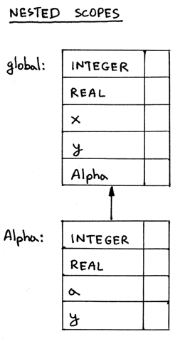
So how to do that?
Update the ScopedSymbolTable class and add a variable _enclosing_scope_ that will hold a pointer to the scope’s enclosing scope.
Upadte the visit_Program_ and _visit_ProcedureDecl methods to create an actual link to the scope’s enclosing scope using the updated version of the ScopedSymbolTable class.
class ScopedSymbolTable(object):
def __init__(self, scoped_name, scope_level, enclosing_scope=None):
self._symbols = OrderedDict()
self.scope_name = scope_name
self.scope_level = scope_level
self.enclosing_scope = enclosing_scope
self._init_builtins()
def _init_builtins(self):
self.insert(BuiltinTypeSymbol('INTEGER'))
self.insert(BuiltinTypeSymbol('REAL'))
def __str__(self):
h1 = 'SCOPE (SCOPED SYMBOL TABLE)'
lines = ['\n', h1, '=' * len(h1)]
for header_name, header_value in (
('Scope name', self.scope_name),
('Scope level', self.scope_level),
('Enclosing scope',
self.enclosing_scope.scope_name if self.enclosing_scope else None
)
):
lines.append('%-15s: %s' % (header_name, header_value))
h2 = 'Scope (Scoped symbol table) contents'
lines.extend([h2, '-' * len(h2)])
lines.extend(
('%7s: %r' % (key, value))
for key, value in self._symbols.items()
)
lines.append('\n')
s = '\n'.join(lines)
return s
__repr__ = __str__
def insert(self, symbol):
print('Insert: %s ' % symbol.name)
self._symbol[symbol.name] = symbol
def lookup(self, name):
print('Lookup: %s ' % name)
symbol = self._symbols.get(name)
# 'symbol' is either an instance of the Symbol or None
return symbol
def visit_Program(self, node):
print('ENTER scope: global')
global_scope = ScopedSymbolTable(
scope_name='global',
scope_level=1,
enclosing_scope=self.current_scope, # None
)
self.current_scope = global_scope
# visit subtree
self.visit(node.block)
print(global_scope)
self.current_scope = self.current_scope.enclosing_scope
print('LEAVE scope: global')There are a couple of things worth mentioning and repeating:
Explicitly pass the self.current_scope_ as the _enclosing_scope argument when creating a scope
Assign the newly created global scope to the variable _self.current_scope_
Restore the variable _self.current_scope_ to its previous value right before leaving the Program node.
And, updating the _visit_ProcedureDecl_ method:
def visit_ProcedureDecl(self,node):
proc_name = node.proc_name
proc_symbol = ProcedureSymbol(proc_name)
self.current_scope.insert(proc_symbol)
print('ENTER scope: %s' % proc_name)
# Scope for parameters and local variables
procedure_scope = ScopedSymbolTable(
scope_name=proc_name,
scope_level=self.current_scope.scope_level+1,
enclosing_scope=self.current_scope
)
self.current_scope = procedure_scope
for param in node.params:
param_type = self.current_scope.lookup(param.type_node.value)
param_name = param.var_node.value
var_symbol = VarSymbol(param_name, param_type)
self.current_scope.insert(var_symbol)
proc_symbol.params.append(var_symbol)
self.visit(node.block_node)
print(procedure_scope)
self.current_scope = self.current_scope.enclosing_scope
print('LEAVE scope: %s ' % proc_name)The main changes are:
Explicitly pass the self.current_scope_ as an _enclosing_scope argument when creating a scope.
Calculate the level automatically based on the scope level of the procedure’s enclosing scope: increment by one!
Restore the value of the _self.current_scope_ to its previous value right before leaving the ProcedureDecl node.
Let’s consider why it is important to set and restore the value of the _self.current_scope_ variable. Just take a look at the following program, where we have two procedure declarations in the global scope:
program Main;
var x, y : real;
procedure AlphaA(a : integer);
var y : integer;
begin { AlphaA }
end; { AlphaA }
procedure AlphaB(a : integer);
var b : integer;
begin { AlphaB }
end; { AlphaB }
begin { Main }
end. { Main }The nesing relationship diagram for the sample program looks like this:
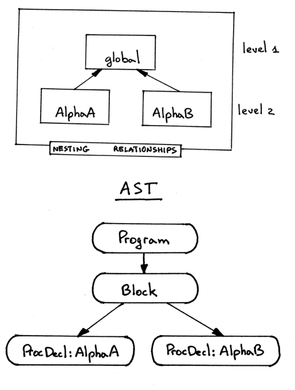
The way our semantic analyzer walks the tree is depth first, left-to-right, so it will traverse the ProcedureDecl node for AlphaA first and then it will visit the ProcedureDecl node for AlphaB. The problem here is that if we don’t restore the self.current_scope_ before leaving AlphaA the _self.current_scope will be left pointing to AlphaA instead of the global scope and, as a result, the semantic analyzer will create the scope AlphaB at level 3, as if it was nested within the scope AlphaA, which is, of course, incorrect.
To construct a scope tree correctly, we need to follow a really simple procedure:
When ENTER a Program or ProcedureDecl node, create a new scope and assign it to the _self.current_scope_
When about to LEAVE the Program or ProcedureDecl node, we restore the value of the _self.current_scope_
Just think of the _self.current_scope_ as a stack pointer and a scope tree as a collection of stacks.
So, if correctly constructed, the scope tree would look like this:
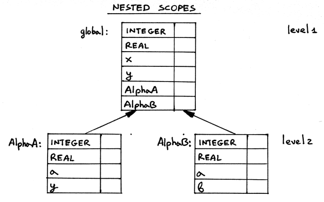
Now, let’s continue and talk about how name resolution works when we have nested scopes.
Nested scopes and name resolution
Here is a sample program with some variable references:
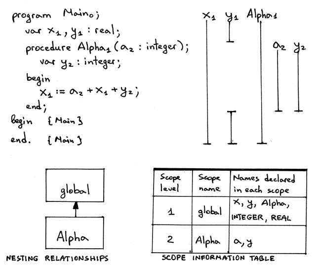
The assignment statement, x resolves to a declaration at level 1, a resolves to a declaration at level 2 and y also resolves to a declaration at level 2.
Lexically (statically) scoped languages like Pascal follow the most closely nested scope rule when it comes to name resolution. It means that, in every scope, a name refers to its lexically closest declaration. For our assignment statement, let’s go over every variable reference and see how the rule works in practice:
The semantic analyzer visits the right-hand side of the assignment first. We begin our search for a’s declaration in the lexically closest scope, which is the Alpha scope. The Alpha scope contains variable declarations in the Alpha procedure including the procedure’s formal parameters. We find the declaration of a in the Alpha scope: it’s the formal parameter a of the Alpha procedure - a variable symbol that has type integer.
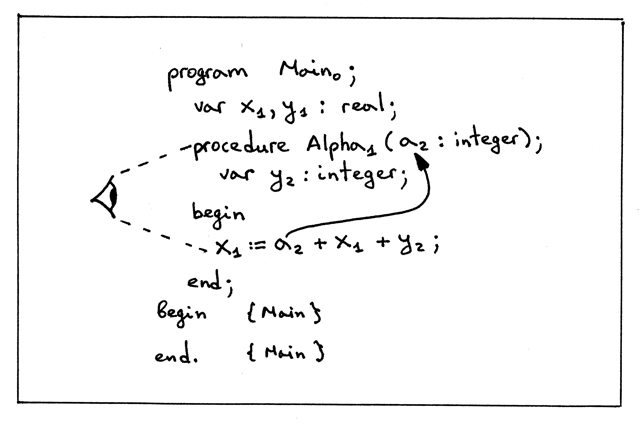
Again, first we search for the declaration of x in the lexically closest scope. The lexically closest scope is the Alpha scope at level 2. The scope contains declarations in the Alpha procedure including the procedure’s formal parameters. We don’t find x at this scope level (in the Alpha scope), so we go up the chain to the global scope and continue our search there. Our search succeeds because the global scope has a variable symbol with the name x in it:
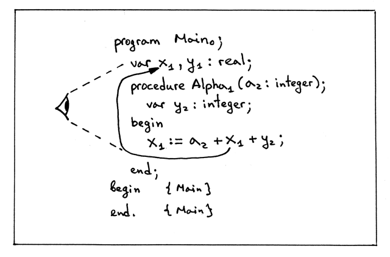
Now look at the variable reference y from the arithmetic expression a + x + y. We find its declaration in the lexically closest scope, which is the Alpha scope. In the Alpha scope the variable y has type integer (if there weren’t a declaration for y in the Alpha scope we would scan the text and find y in the outer/global scope and it would have real type in that case):
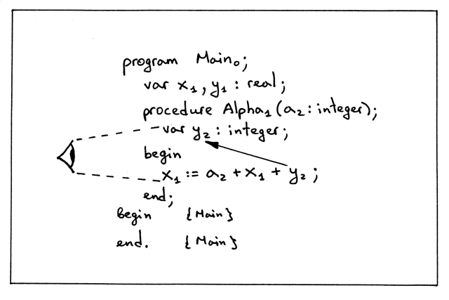
Finally, the variable x from the left hand side of the assignment statement x := a + x + y; It resolves to the same declaration as the variable reference x in the arithmetic expression on the right-hand side:
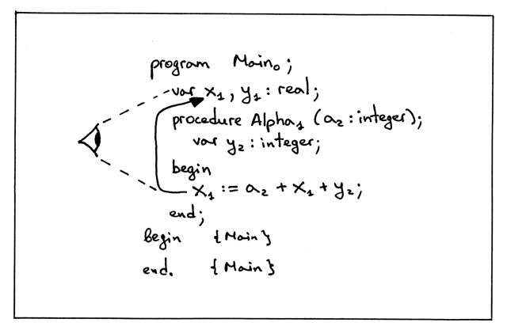
How to implement that behavior of looking in the current scope, and then looking in the enclosing scope, and so on until either find the symbol we’re looking for or we’ve reached the top of the scope tree and there are no more scopes left? We simply need to extend the lookup method in the ScopedSymbolTable class to continue its search up the chain in the scope tree:
def lookup(self,name):
print('Lookup: %s. (Scope name: %s)' % (name, self.scope_name))
# 'symbol' is either an instance of the Symbol class or None
symbol = self._symbols.get(name)
if symbol is not None:
return symbol
# recursively go up the chain and lookup the name
if self.enclosing_scope is not None:
return self.enclosing_scope.lookup(name)The way the updated lookup method works:
Search for a symbol by name in the current scope. If the symbol is found, then return it.
If the symbol is not found, recursively traverse the tree and search for the symbol in the scopes up the chain. You don’t have to do the lookup recursively, you can rewrite it into an iterative form; the important part is to follow the link from a nested scope to its enclosing scope and search for the symbol there and up the tree until either the symbol is found or there are no more scopes left because you’ve reached the top of the scope tree.
The lookup method also prints the scope name, in parenthesis, where the lookup happens to make it clearer that lookup goes up the chain to search for a symbol, if it can’t find it in the current scope.
Source-to-source compiler
We will start by talking about definitions. For the purpose of this article, we difine a source-to-source compiler as a compiler that translates a program in some source language into a program in the same (or almost the same) source language.
So, if you write a translator that takes as an input a Pascal program and outputs a Pascal program, possibly modified, or enhanced, the translator in this case is called a source-to-source compiler.
A good example of a source-to-source compiler for us to study would be a compiler that takes a Pascal program as an input and outputs a Pascal-like program where every name is subscripted with a corresponding scope level, and, in addition to that, every variable reference also has a type indicator. So we want a source-to-source compiler that would take the following Pascal program:
program Main;
var x, y: real;
procedure Alpha(a : integer);
var y : integer;
begin
x := a + x + y;
end;
begin { Main }
end. { Main }and turn it into the following Pascal-like program:
program Main0;
var x1 : REAL;
var y1 : REAL;
procedure Alpha1(a2 : INTEGER);
var y2 : INTEGER;
begin
<x1:REAL> := <a2:INTEGER> + <x1:REAL> + <y2:INTEGER>;
end; {END OF Alpha}
begin
end. {END OF Main}Here is the list of modifications our source-to-source compiler should make to an input Pascal program:
Every declaration should be printed on a separate line, so if we have multiple declarations in the input Pascal program, the compiled output should have each declaration on a separate line. We can see in the text above, for example, how the line var x, y : real; gets converted into multiple lines.
Every name should get subscripted with a number corresponding to the scope level of the respective declaration.
Every variable reference, in addition to being subscripted, should also be printed in the following form:
<var_name_with_subscript:type>The compiler should also add a comment at the end of every block in the form {END OF … }, where the ellipses will get substituted either with a program name or procedure name. That will help us identify the textual boundaries of procedures faster.
As you can see from the generated output above, this source-to-source compiler could be a useful tool for understanding how name resolution works, especially when a program has nested scopes, because the output generated by the compiler would allow us to quickly see to what declaration and in what scope a certain variable reference resolves to. This is good help when learning about symbols, nested scopes, and name resolution.
All we need to do now is extend the semantic analyzer a bit to generate the enhanced output. You can see the full source code of the compiler here. It is basically a semantic analyzer on drugs, modified to generate and return strings for certain AST nodes.
For the following program, for example:
program Main;
var x, y : real;
var z : integer;
procedure AlphaA(a : integer);
var y : integer;
begin { AlphaA }
x := a + x + y;
end; { AlphaA }
procedure AlphaB(a : integer);
var b : integer;
begin { AlphaB }
end; { AlphaB }
begin { Main }
end. { Main }The compiler genertates the following output:
program Main0;
var x1 : REAL;
var y1 : REAL;
var z1 : INTEGER;
procedure AlphaA1(a2 : INTEGER);
var y2 : INTEGER;
begin
<x1:REAL> := <a2:INTEGER> + <x1:REAL> + <y2:INTEGER>;
end; {END OF AlphaA}
procedure AlphaB1(a2 : INTEGER);
var b2 : INTEGER;
begin
end; {END OF AlphaB}
begin
end. {END OF Main}In the next article we’ll learn about runtime, call stack, implement procedure calls, and write our first version of a recursive factorial function. Stay tuned and see you soon! However, there is no next yet.